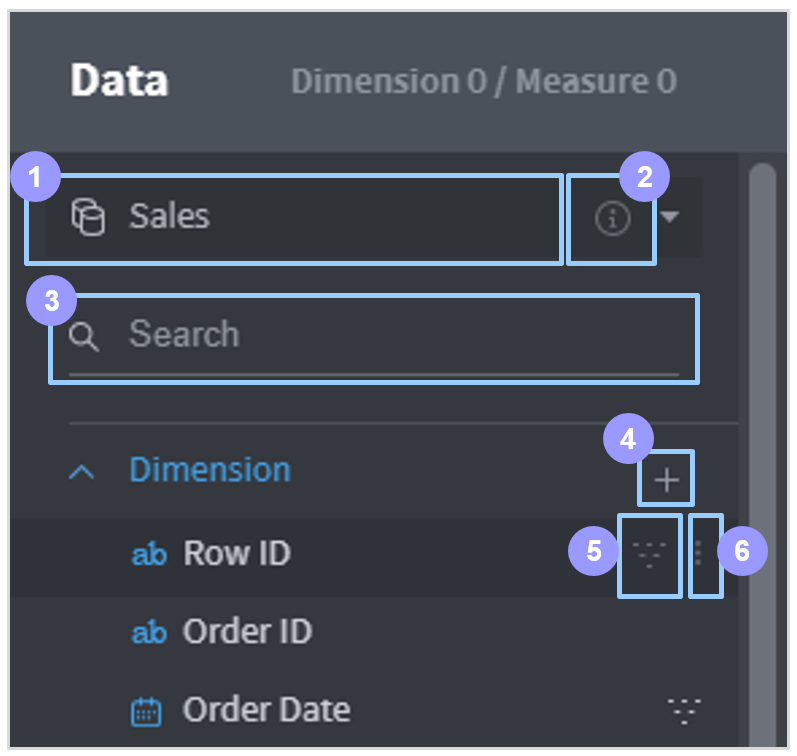

Data Column List¶
Columns listed in the data column list are classified as ‘dimension’ columns and ‘measure’ columns. For more details on the concept of dimensions and measures, refer to ‘Dimensions’ and ‘Measures’.
Structure of data column list¶
In the data column list, you can view and edit information on connected data sources, as well as add or remove column filters easily.

Select/set data source: Select a data source or set the connection/join relationship for the data source.
Data details: Click this to display information about the selected data source in a new dialog box.
Search by column name: Searches the column list by name.
Add custom column: Click on it to open the dialog box to create a new column by combining/processing data source columns. Custom columns are commonly used throughout the dashboard.
Apply/clear filter: Hover the mouse over a column to display this button. Click on it to apply a chart filter to the column, and click again to clear the chart filter. For columns to which a filter is applied, the
icon is displayed regardless of the mouse position.
More: This button appears when you hover the mouse over a column, allowing you to check additional information about the column and designate an alias.
: Clicking this causes a new dialog box to appear with a summary of information about the column and its data values.
Logic column name: Displays the logical column heading for the column.
Type: Displays the logical data type for the column.
Alias: Sets a column alias. A regular column name can contain only alphanumeric characters and a limited number of special characters with no spaces allowed. Therefore, setting an alias may help to identify the column for convenient analytics work. Aliases are commonly used throughout the dashboard.
Value alias: Allows you to designate aliases for the various data values included in the column as well. Aliases are commonly used throughout the dashboard.
Add custom column¶
Click the + button on the data source column list to open a dialog box for adding a custom column. By applying various formulas to existing columns of the data source, you can create a new column that helps create your desired chart.

Column name: Fill in a name for the custom column.
Coding box: Write a code for the custom column. Click a list from the column or formula list below to type your selection in this box automatically.
Add column: Lists the columns of the data source. Click a column in the list to automatically type your selection in the coding box.
Add formula: Lists the formulas supported by Metatron. Click a formula in the list to type your selection in the coding box automatically, with the text cursor relocated to where a parameter needs to be inserted. For details on each formula’s purpose, use, and examples, see the help box on the right.